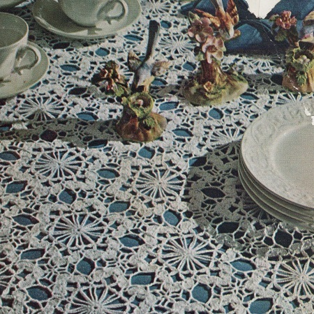

Blue Bird Tablecloth Pattern
MATERIALS:
AMERICAN THREAD COMPANY
The Famous "PURITAN" MERCERIZED CROCHET COTTON 20 — 250 yd. Balls White or "GIANT" MERCERIZED CROCHET COTTON
9 — 550 yd. Balls White.
Steel Crochet Hook No. 7
Each Motif measures about 5 inches from point to point.
158 motifs and 14 fill-in motifs are required for cloth measuring 54 x 62 inches. There are 11 motifs in 1st row, 10 motifs in 2nd row, 11 motifs in 3rd row, 10 motifs in 4th row, etc. Repeat last 2 rows to join remain-ing motifs.
MOTIF 1st Round: Ch 5, join to form ring, ch 1, sc in ring, * ch 20, sc in ring, repeat from * 10 times, ch 10, d tr trc (5 times over hook) in sc, (the dtr trc brings thread in position for next round).
2nd ROUND: ** Ch 1, sc in loop, * ch 4, dc in 4th ch from hook (rice st), ch 4, 9 dc in 4th st from hook (petal) ch 3, sl st in same space with 9 dc petal, repeat from * twice (scallop), work a rice st, sl st in 1st sc, ** rice st, sc in next loop, ch 3, sc in same loop, rice st, sc in next loop, repeat from 1st * all around.
3rd ROUND: ** Sl st to 1st dc of 1st scallop, ch 1, sc in same space, ch 7, skip 3 dc, sc in center dc, * ch 7, skip 3 dc, insert
hook in next dc of scallop, pull loop through, insert hook in 1st dc of next scallop, pull loop through, thread over and work off all loops at one time, ch 7, skip 3 dc, 1 dc, ch 5, 1 dc in center dc, ch 7, skip 3 dc, insert hook in next dc, pull loop through, insert hook in 1st dc of next scallop, pull loop through, thread over and work off all loops at one time, ch 7, skip 3 dc, sc in center dc, ch 7, skip 3 dc, sc in next dc, ** ch 1, sc in ch 3 loop of 2nd round, ch 1, sc in next dc of next scallop, ch 3, drop loop from hook, insert hook in center st of last ch 7 loop, pick up and pull loop through, ch 3, skip 3 dc, sc in next dc, repeat from * all around joining last loop to 1st loop in same manner, ch 1, sc in ch 3 loop of 2nd round, ch 1, join in last sl st, cut thread.
Work a 2nd motif in same manner joining to 1st motif in last round as follows; work to 1st dc of any center scallop, ch 2, sl st in corresponding loop of 1st motif, ch 2, dc in same space of 2nd motif, ch 3, dc in center st of next loop of 1st motif, ch 3, skip 3 dc, insert hook in next dc of 2nd motif, pull loop through, insert in 1st dc of next scallop, pull loop through, thread over and work off all loops at one time, ch 3, trc in center st of next loop of 1st motif, ch 3, skip 3 dc of 2nd motif, sc in next d , ch 7, skip 3 dc, sc in next dc, ch 1, sc in next ch 3 loop of previous round, ch 1, sc in 1st dc of next scallop, ch 3, drop loop from hook, insert in center st of last ch 7 loop of previous scallop, pull loop through, ch 3, skip 3 dc, sc in center dc, ch 3, trc in corresponding loop of 1st motif, ch 3, skip 3 dc of 2nd motif, insert hook in next dc, pull loop through, insert in 1st dc of next scallop, pull loop through, thread over and work off all loops at one time, ch 3, dc in center st of next loop of 1st motif, ch 3, skip 3 dc of 2nd motif, dc in next dc, ch 2, join to corresponding loop of 1st motif, ch 2, dc in same space of 2nd motif, complete round to correspond, join, cut thread. Work a 3rd motif joining to 1st and 2nd motifs as illustrated.
END FILL-IN MOTIFS: Work 1st round same as motif but only work nine 20 ch loops, ch 10, dtr trc in sc.
2nd ROUND: Work same as 2nd round working between ** once, work 2 rice sts, sc in next loop, ch 3, sc in same loop, rice st, sc in next loop, complete round to correspond working 2 rice sts between scallops at end of round, join.
3rd ROUND: Work same as 3rd round working between ** once, ch 2, dc in center of next double rice st, ch 1, dc in ch 3 loop of previous round, ch 2, sc in 1st dc of next scallop, ch 3, join to center of last ch 7 loop of last scallop, ch 3, skip 3 dc, sc in next dc, ch 7, skip 3 dc, insert hook in next dc, pull loop through, insert hook in 1st dc of next scallop, pull loop through, thread over and pull through all loops at one time, ch 7, skip 3 dc, dc in center dc, ch 2, join at side edge of cloth same as other motifs joining to 1st, 2nd and 3rd rows of motifs working to within last ch 7 loop, ch 3, join to 1st ch 7 loop, ch 3, sc in last dc of scallop, ch 2, dc in next ch 3 loop of previous round, ch 1, dc between double rice sts, ch 2, join in last sl st, cut thread. Join a fill-in motif in same manner in each large space across each side edge.
HOME